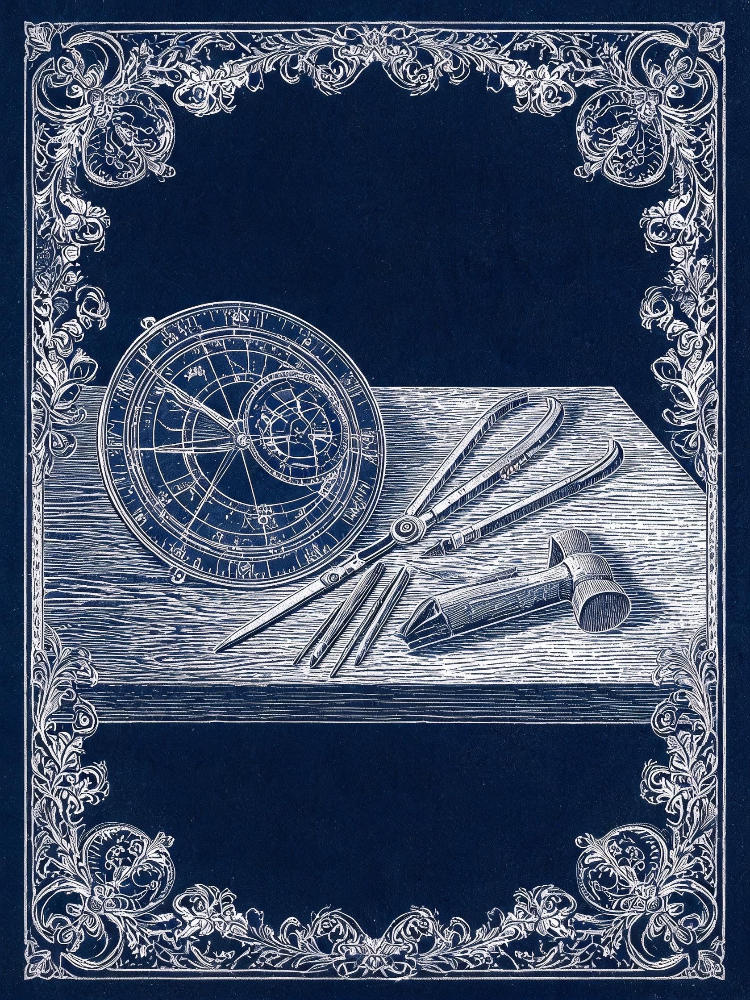

The instruments
Every plate in the collection begins as a brass problem. Before a line is cut, an instrument has to answer it.

How far a star has climbed
How far a star has climbed, when it will set, where the shadow of a gnomon lands on a wall at four in the afternoon in the second week of October. The society's makers worked the two trades together, drawing the sky and building the tools that measured it, because neither half stayed honest alone.
An astrolabe is cut, not printed. The plate is divided on a rule and a pair of dividers, punched, then broached and filed until the rete turns freely on its pin. The rete, the open lattice of stars, is the most delicate work of the lot: a star's position is a hole in metal, and a hole cannot be argued with once the burin has passed through it. The makers kept their own error notebooks, and the exhibition shows three of them open beside the instruments they corrected.
The engraving came after, and it came from the same hand. Vaught drew his constellation figures straight onto the copper, so that the allegory and the measurement are the same incision, an arm reaching for a star that is also a scale. Fournier, who worked the moon, hatched her shadows by the rule of the instrument that took the sight, which is why her crater floors carry their own direction of light.
What the bench does now
The workshop behind the Long Room is still working. Two makers cut replacement retes for instruments in the collection and take commission work for observatories that want a sighting instrument in brass rather than in software. On demonstration evenings the bench is moved into the Long Room and the cuts are made where visitors can stand at the elbow of the maker.
- Principal materials
- Brass, copper plate, hand-ground ink, laid paper
- Workshop
- Aldring & Vaught, the Meridian rooms, 1776–1812
- Still in use
- The dividing engine, the bench vice, the sighting quadrant
- On the bench tonight
- One rete cut from the 1768 star list, unfinished
Register of instruments
Nineteen instruments are held, of which seven are out of their cases for the autumn exhibition. The register records maker, date and the purpose each instrument was built to serve.
| Instrument | Maker | Date | Materials | Built to answer |
|---|---|---|---|---|
| Astrolabe, rete and plate | Workshop of K. Aldring | c. 1780 | Brass, steel pin | Where a named star stands at a given hour |
| Sighting quadrant | M. Vaught | 1783 | Brass, boxwood limb | Meridian altitude taken from the roof |
| Dividing engine | K. Aldring | 1779 | Brass, cast iron frame | Equal graduations, to a sixtieth of a degree |
| Gnomon and shadow rule | Workshop of K. Aldring | c. 1785 | Brass | Where a shadow falls on the west wall at four in the afternoon |
| Orrery, hand cranked | A. Fournier | 1801 | Brass, ivory, oak base | The planetary periods the solar plate claims |
| Error notebook, third series | M. Vaught | 1794–1799 | Ink on laid paper | The corrections made to the planisphere after printing |
| Rete, unfinished | Meridian bench | in hand | Brass, broached | A star list of 1768, being cut again this season |
The register is kept at the desk and may be consulted during a session. Instrument dates are as recorded by the workshop; the symbols on the wooden cases are not yet transcribed.
Why the errors are kept
A plate is cut once and printed for years, so an error in the copper outlives the maker who introduced it. Vaught kept a running notebook of every correction he made after a proof had been pulled: a star moved a tenth of a degree, a coast flattened, a scale re-cut at the end nearest the pin where the burin wanders.
Three of those notebooks are on the bench for the autumn show, open at the pages that match the plates on the wall. Read them beside the plate and the correction is visible in the copper as a shallow second cut, sometimes a burr the printer has inked over for two hundred years.
The two trades, kept together
Splitting the drawing from the measuring is the mistake the society was founded to avoid. A chart drawn without an instrument behind it drifts into decoration, and an instrument built without a chart to check it against drifts into a curiosity.
That is why the bench and the plates are shown in the same room and handled in the same session, and why the workshop takes commission work at all. An instrument that never has to answer a question is not being tested by anything.